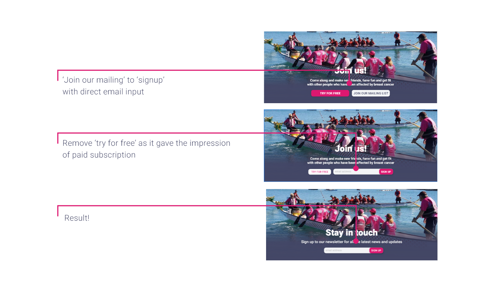

OVERVIEW
The Adelaide Survivors Abreast (ASA) group is a dragon boat racing club formed as a support group, social club and sporting organisation for people who have been affected by breast cancer.
THE PROCESS
RESEARCH
We chose the Adelaide Survivors Abreast website for this project as it is a good cause and a local organisation. To evaluate the current site we conducted user research and usability tests to gain an understanding of the user's experience while interacting with the site. We also carried out in depth competitor analysis and a full heuristic evaluation.
We discovered the current ASA website fails to communicate to users that they are a club with a purpose. There is a complete lack of information related to the cancer survivors support group and the information about dragon boating could be better organised as it is difficult to navigate. The overall visual design is unappealing, lacks consistency and fails to meet accessibility standards.
User testing confirmed the conclusions we had reached from the heuristic analysis, with users saying...

THE USER
Libby, a cancer survivor, has been given another chance at living and wants to make the most of her time.
THE SOLUTION
The research results helped identify the 3 most crucial areas that needed improvement.
The site needed more cancer support information and new content to create a product that helps users understand what the organisation is about, to give them the confidence to connect and become involved. Decisions were made on what content to feature and then how to structure it. This included a mission statement for clarity of purpose, a blog to keep members informed, member stories to make a community of survivors and a photo gallery to create a welcoming environment. We decided the homepage was the best place to showcase a lot of the new content.
THE NEW SITEMAP
WIREFRAMING
The new features and content were laid out as wireframes with pointers and links to guide users to all the information they need, we designed a section for events, a section with cards linking to member stories, a news and FAQs section, a photo gallery so new users can get a sense of what the group is like, we also included a place to subscribe to a newsletter.
USER JOURNEY

STYLE GUIDE
When making decisions on the look and feel of the site a major factor was meeting AA accessibility standrards, the demographic of the user is an older generation. Hot pink for the affiliation with breast cancer was essential which was teamed with a dark navy ensuring AA accessibility standards were met.
A modern sans serif font was selected to be clean and visually appealing, but also easy to read. Simple bold icons and buttons were created and plebty of ASA pictures were incorporated to show the user what it might be like when they come along to try.

RESPONSIVE
The styles were applied to a mid fidelity prototypes for desktop, mobile and tablet, then it was back for more user testing.
TESTING AND ITERATION
Testing highlighted areas that could be improved for a better user experience.
On the splash banner towards the base of the page, where users can click come and try or sign up to the newsletter, testing feedback told us that users would be more likely to sign up if the email input was on the banner, rather than just a button.
Testing of the second iteration showed an issue with the sign up field being next to the try for free button. It gave the wrong impression that signing up might be a paid subscription, so we took the decision to make the banner purely for subscribing to the newsletter.

The other major iteration change was on the contact form page. Users felt the check boxes looked like you might only be able to select one as they resembled radio buttons. Users felt it would be good to have links to the training schedule and FAQs on this page in case they navigated there but still had further questions.
THE RESULT
The improved usability, accessible colour palette and new content resulted in a product that helps users see who the ASA are, This will give people confidence to connect with the ASA and become involved. The new mission statement gives clarity of purpose, a blog for up to date information, member stories create a community and a photo gallery for a welcoming feel.
WHAT'S NEXT?